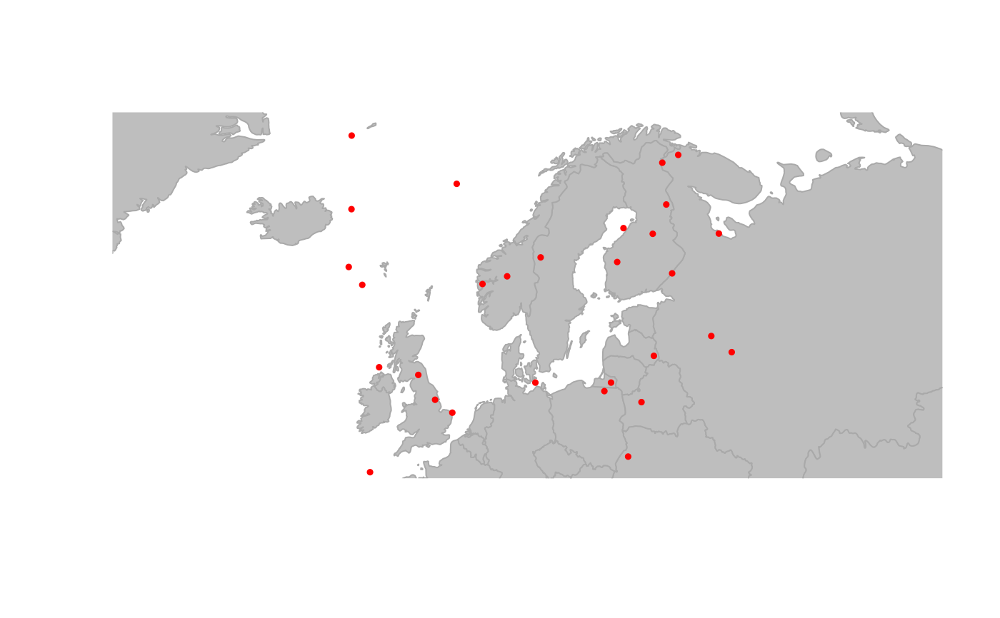
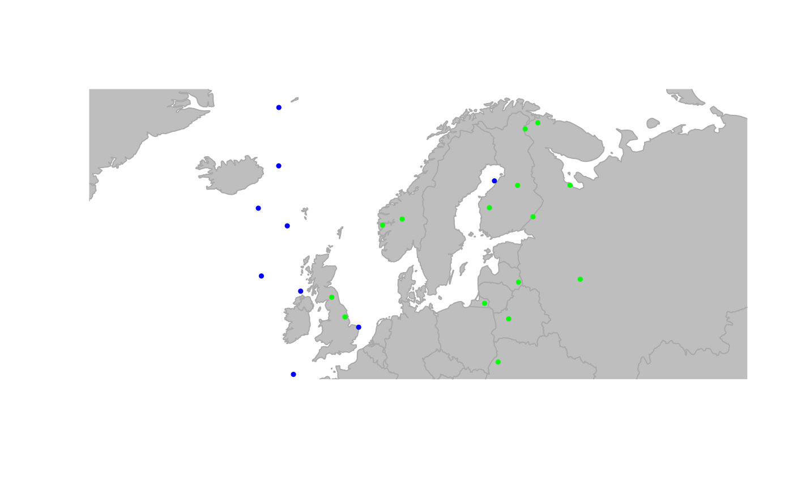

The generic function findLand uses information from a GIS shapefile
to define which nodes are on land, and which are not. Strictly speaking,
being 'on land' is in fact being inside a polygon of the shapefile.
Usage
findLand(x, ...)
# S4 method for class 'matrix'
findLand(x, shape = "world", ...)
# S4 method for class 'data.frame'
findLand(x, shape = "world", ...)
# S4 method for class 'gGraph'
findLand(x, shape = "world", attr.name = "habitat", ...)Arguments
- x
a matrix, a data.frame, or a valid gGraph object. For matrix and data.frame, input must have two columns giving longitudes and latitudes of locations being considered.
- ...
further arguments to be passed to other methods. Currently not used.
- shape
a shapefile of the class
sf(seesf::st_read()to import a GIS shapefile). Alternatively, a character string indicating one shapefile released with geoGraph; currently, only 'world' is available.- attr.name
a character string giving the name of the node attribute in which the output is to be stored.
Value
The output depends on the nature of the input:
- matrix,
data.frame: a factor with two levels being 'land' and 'sea'.
gGraph: a gGraph object with a new node attribute, possibly added to previously existing node attributes (@nodes.attrslot).
Details
Nodes can be specified either as a matrix of geographic coordinates, or as a gGraph object.
See also
assignByPolygon, to retrieve any information from a
GIS shapefile.
Examples
## create a new gGraph with random coordinates
myCoords <- data.frame(long = runif(1000, -180, 180), lat = runif(1000, -90, 90))
obj <- new("gGraph", coords = myCoords)
obj # note: no node attribute
#>
#> === gGraph object ===
#>
#> @coords: spatial coordinates of 1000 nodes
#> lon lat
#> 1 151.86631 -72.25429
#> 2 48.34813 76.86184
#> 3 -71.79669 -20.55676
#> ...
#>
#> @nodes.attr: 0 nodes attributes
#> data frame with 0 columns and 0 rows
#>
#> @meta: list of meta information with 0 items
#>
#> @graph:
#> A graphNEL graph with undirected edges
#> Number of Nodes = 1000
#> Number of Edges = 0
plot(obj)

## find which points are on land
obj <- findLand(obj)
#> although coordinates are longitude/latitude, st_intersects assumes that they
#> are planar
obj # note: new node attribute
#>
#> === gGraph object ===
#>
#> @coords: spatial coordinates of 1000 nodes
#> lon lat
#> 1 151.86631 -72.25429
#> 2 48.34813 76.86184
#> 3 -71.79669 -20.55676
#> ...
#>
#> @nodes.attr: 1 nodes attributes
#> habitat
#> 1 land
#> 2 sea
#> 3 sea
#> ...
#>
#> @meta: list of meta information with 0 items
#>
#> @graph:
#> A graphNEL graph with undirected edges
#> Number of Nodes = 1000
#> Number of Edges = 0
## define rules for colors
temp <- data.frame(habitat = c("land", "sea"), color = c("green", "blue"))
temp
#> habitat color
#> 1 land green
#> 2 sea blue
obj@meta$colors <- temp
## plot object with new colors
plot(obj)
